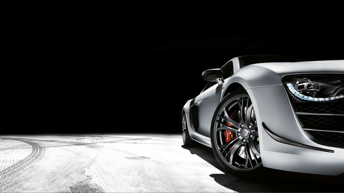
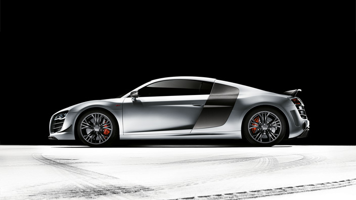
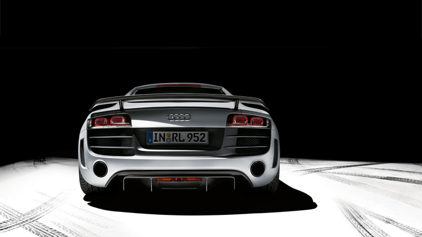
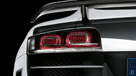
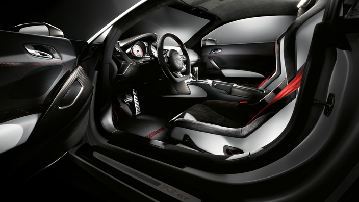
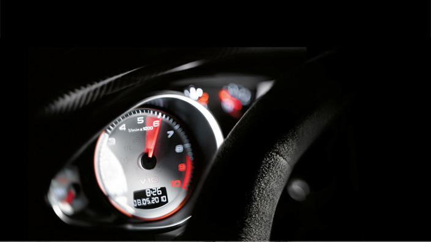
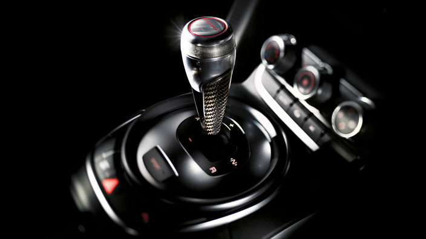
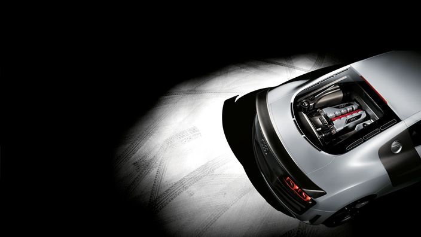

Catalogus > detail: Audi R8
Een meteen herkenbaar karakter. Elk exterieurdetail van de Audi R8 is geïnspireerd door de racerij. Overal is direct zichtbaar dat consequent gewicht is bespaard, onder andere door met koolstofvezel versterkte kunststof toe te passen. Daarmee benadrukt de R8 meteen zijn sportieve bedoelingen.
De voorspoiler is van een nieuw ontwerp. Op de hoeken zitten matte carbon strips. De omlijsting van de Audi singleframe grille is mat titaniumgrijs en het spijlwerk in de grille is matzwart. Verder zijn de spiegelkappen van mat carbon en de dubbele spiegelpootjes van aluminium.
De velgen mogen er ook zijn. Ze zijn 19 inch groot en uitgevoerd in titaniumkleurig 5–dubbelspaak Y–design. Achter het lichtmetaal zijn de Audi keramische remmen zichtbaar. De remklauwen zijn rood geëloxeerd. De met koolstofvezel versterkte keramische schijven kunnen vele forse vertragingen achter elkaar aan.
De vaste achtervleugel en het mat carbon diffusorgedeelte zijn duidelijk uit de autosport afkomstig. Ook extra lichte uitlaatsierstukken horen bij het nieuwe design. Net zoals de mat titaniumgrijze luchtuitlaatlamellen steken de uitlaten mooi af tegen de in lakkleur gespoten achterbumper.
De dynamiek van de achterzijde blijkt ook uit de led–achterlichten in zwarte behuizingen achter heldere covers. Dit lampdesign is specifiek voor de R8.
Audi en de racesport zijn onlosmakelijk met elkaar verbonden. Dat heeft al voor veel successen gezorgd. Daar profiteert u in elke Audi van en in de R8 nog wel het meest. De sportieve ergonomie en dynamische details zijn overal in het interieur voel– en zichtbaar.
De cockpit lijkt op die van een monoposto (eenzits racewagen). Dat draagt al flink bij aan het autosportgevoel. De met alcantara beklede kuipstoelen met gekleurde stiksels houden u ook in bochten stevig vast.
Waar u ook kijkt en voelt, alle materialen zijn van de beste kwaliteit. Ook het design is hoogwaardig. Voorbeelden zijn de witte wijzerplaten, het nieuwe design van de versnellingspook, de mat carbon decoratielijsten en het met alcantara beklede R8 sportstuur.
Een sportautoconcept dat staat als een huis. Met onweerstaanbare aantrekkingskracht. De Audi R8 komt in een wereldwijde oplage van 333 exemplaren op de markt. Op de pookknop staat het volgnummer van uw eigen versie.
Het hogetoerenconcept heeft zich al in veel race–auto's bewezen. Nu zorgt het in de motor van de Audi R8 voor nog betere prestaties en een extra agiel karakter.
Al bij lage toerentallen is een fors koppel van maximaal 540 Nm actief, waardoor u zeer snel kunt accelereren. De motor heeft een lineaire vermogensopbouw over het volledige toerenbereik en klinkt indrukwekkend en sterk. Deze donderende power is ook binnenin de R8 goed te horen en te voelen.
We praten hier over onweerstaanbare kracht uit een 5.2 V10 met 4 kleppen per cilinder en FSI® technologie. Lucht uit een korter aanzuigkanaal en benzine worden efficiënt verbrand. Dankzij een geoptimaliseerde motorregeling bedraagt het vermogen nu 560 pk (412 kW). De dry–sump smering maakt een laag zwaartepunt van de motor mogelijk. Hierdoor is de gewichtsverdeling nog beter en profiteert ook de rijdynamiek mee. Bovendien is met deze smering een constant hoge oliedruk te bewerkstellingen, ook als het er stevig aan toe gaat. Eenmaal onderweg merkt u het meteen: de auto ligt rotsvast op de weg en de motor reageert vliegensvlug.

Verbruiks– en emissiewaarden:
Gemiddeld brandstofverbruik: 13,7 l/100 km
Gemiddelde CO2–emissie: 327 g/km